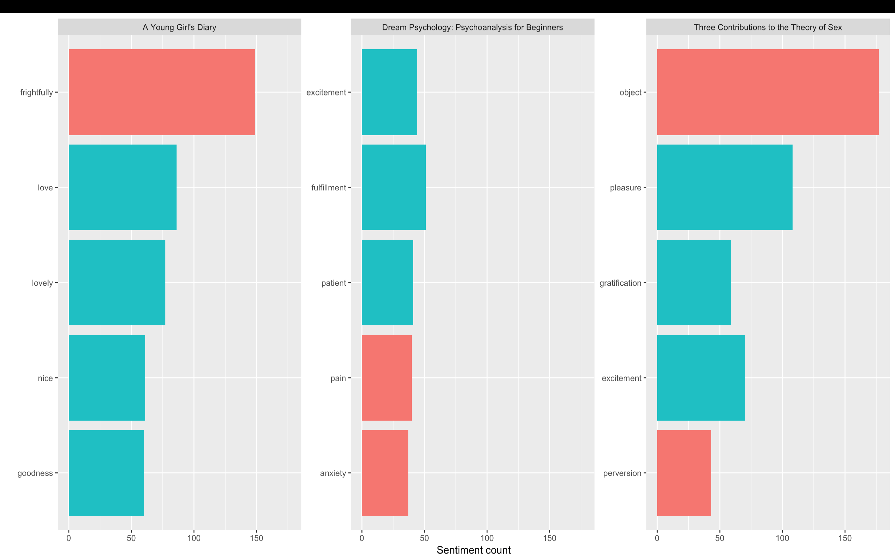

Howzit from Cape Town. I am blessed to have been at a vibrant city over the past month. I am exploring the world of Data Science with amazing mentors and classmates!
This is a project I worked on. I used sentiment analysis to gain insight on the themes in three masterpieces of Sigmund Freud.

And a ‘mundane’ evening at CT.